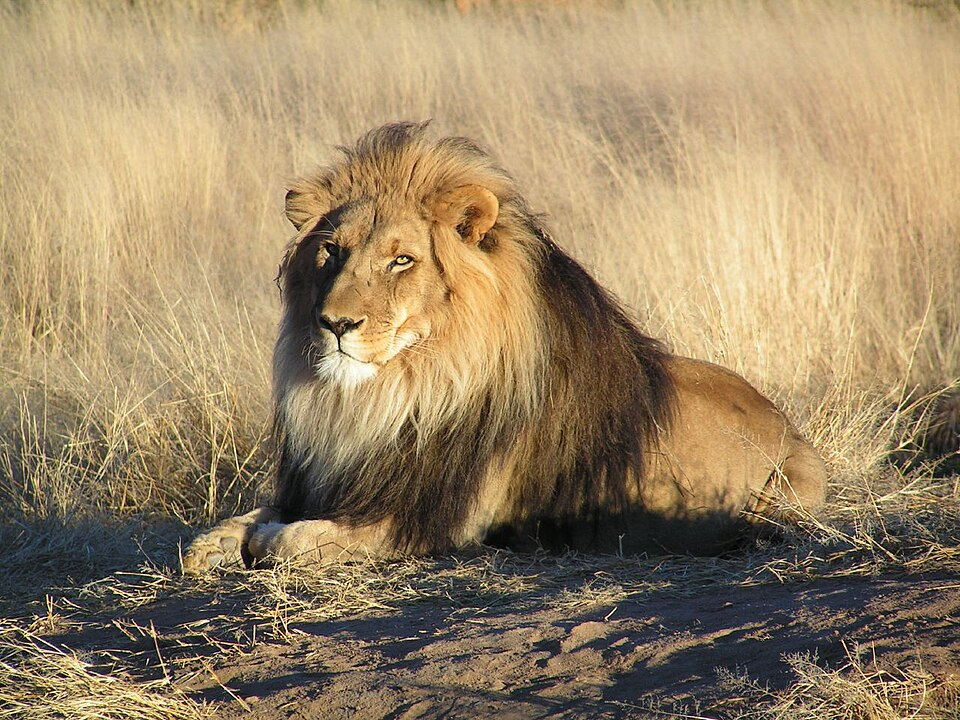

Nuotraukos šaltinis
Liūtas
Gyvūnas
Liūtas - katinių šeimos plėšrus žinduolis. Gyvena savanose, miško savanose, krūmynuose
- Gyvenimo trukmė: 10 - 14 metų.
- Mase: 190 kg patinas, 130 kg patelė.
- Liūtai vaikšto kulnais nesiekdami žemės.
- Kuo tamsesni liūto karčiai, tuo jis vyresnis.
- Šie gyvūnai yra mėsėdžiai, jų grobiu gali tapti ir kiškis, ir stambus buivolas.
© 2099. Vardas Pavarde